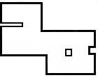

🗺️ Robot Location & Status
🔄 Connecting to Robot...
--
🔋 Battery
--
🌐 IP Address
--
🏠 Dock Status
--
📍 Waypoints
🗺️ Map will be displayed here
Place your map.png in assets/ folder

Place your map.png in assets/ folder